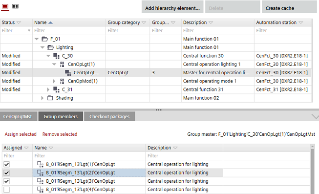

将群组成员分配给群组管理员
InBuilding > Central functions，您可以在“详细信息”窗格中将群组成员分配给群组管理员（Group members).
Group member details

Assign a group member to a group manager
- A central function is created.
- Select a group manager.
- In the Details pane (Group member), the corresponding group members display.
- In the Assigned column, select the corresponding check boxes of the group members you want to assign.
- Click Assign selected.
- The selected group members are assigned to the group manager.